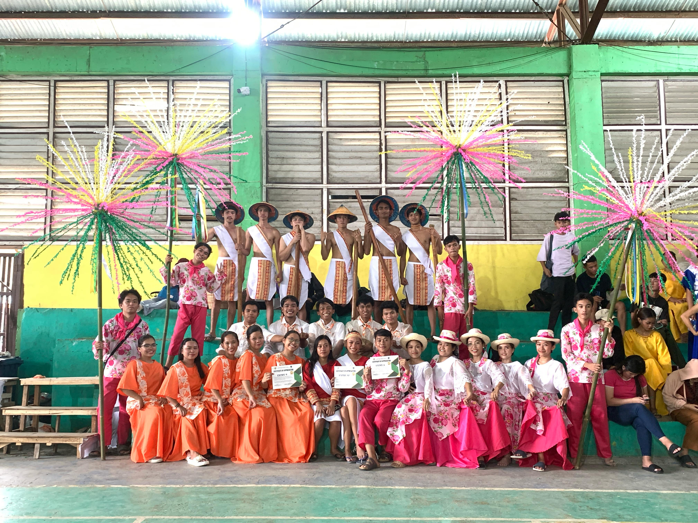
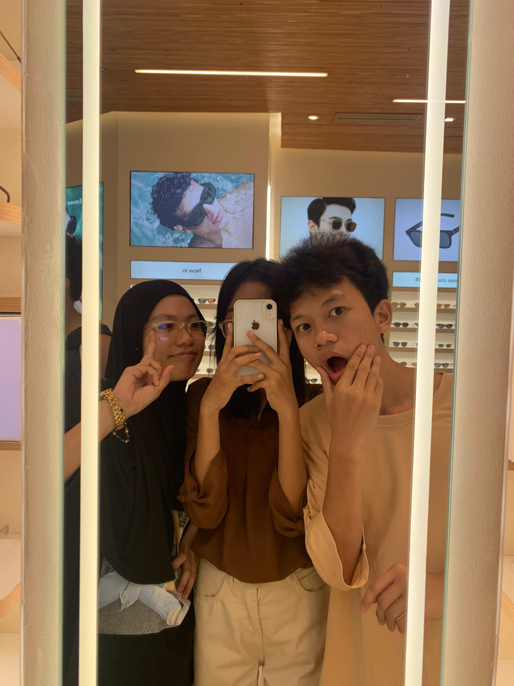

My Friends
INTRODUCTION
This page is dedicated to the amazing friends who make my life brighter and more meaningful. From my best friends, Sittie Jonaina and Raffy Abedin, to my incredible circle of classmates, each one plays a special role in shaping who I am. Here, I’ll share the stories, memories, and experiences that celebrate these friendships. Whether it's through laughter, support, or simply being there for each other, my friends make every moment worth cherishing. Thank you for visiting and getting to know the people who mean so much to me!
Classmates
My favorite friends are my classmates. We share both fun and challenging moments,
and together, we’ve built a strong bond. Whether it’s working on group projects
or chatting during breaks, we support and learn from each other. My classmates are
always there when I need help, making school life more enjoyable and meaningful. Their friendship has made my school experience unforgettable, and I’m grateful for all the memories we’ve created together.
Circle of Friends

My circle of friends is a group I deeply value and trust. We support each other
through both good times and challenges, always offering help and comfort when needed.
Each of us brings something unique to the group, making our bond stronger.
Whether celebrating successes or facing difficulties, our friendship is built on
mutual respect, trust, and shared experiences. I'm grateful for the joy and support
my circle of friends brings into my life.
My BestFriends
My best friends, Sittie Jonaina and Raffy Abedin, are two people who mean the world to me. We share an unbreakable bond built on trust, laughter, and countless memories. Sittie Jonaina is always there to listen and offer advice, while Raffy Abedin has a way of making every moment fun and exciting. Together, they bring balance to my life—one offers wisdom, and the other, endless joy.